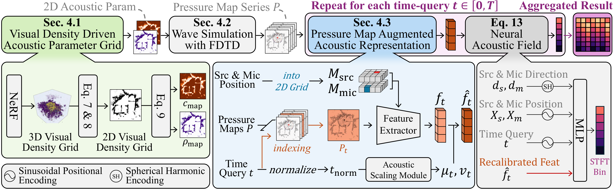

Abstract
Room acoustics modeling requires capturing intricate wave phenomena beyond direct sound propagation, including reflections, refractions, and diffractions. Recent neural acoustic synthesis methods have progressively incorporated richer scene representations and physics-informed priors, yet typically learn acoustic behavior without considering wave propagation dynamics, which inherently capture diffraction and interference phenomena. We propose WavNAF, a framework that bridges wave dynamics and neural acoustic modeling by leveraging Finite-Difference Time-Domain (FDTD) simulations, which solve the wave equation on discrete spatiotemporal grids to capture these phenomena. However, directly applying FDTD at full scale is computationally prohibitive under CFL stability constraints. Inspired by traditional acoustic scale models, WavNAF constructs a geometry-preserving, scaled digital replica from NeRF-derived scene geometry and acoustically probes it with temporally compressed FDTD simulation. The resulting pressure maps are encoded not as direct full-scale Room Impulse Response (RIR) estimates, but as compressed-domain wave signatures that provide the neural acoustic field with a structured inductive bias beyond static geometry. To bridge the mismatch between these scaled simulation features and full-scale acoustic responses, we introduce a Neural Acoustic Scaling Module that adaptively recalibrates pressure-map features at the feature level for full-scale RIR prediction. Experiments show that WavNAF yields consistent gains over prior neural baselines across standard acoustic metrics.
Method Overview

Demo on the RAF Dataset
A listener moves along a trajectory through two real rooms from the RAF dataset. At each microphone pose WavNAF predicts the room impulse response, which is convolved with a dry source signal. Turn on sound; headphones recommended.
Music: Jim Yosef – Firefly [NCS Release].
BibTeX
@inproceedings{wavnaf2026,
title = {WavNAF: Learning Wave Propagation Priors for Neural Acoustic Fields},
author = {Kim, Taeho and Kim, Hyunjun and Lee, MinKyu and Lee, SuBeen and An, Inkyu and Heo, Jae-Pil},
booktitle = {Advances in Neural Information Processing Systems (NeurIPS)},
year = {2026}
}